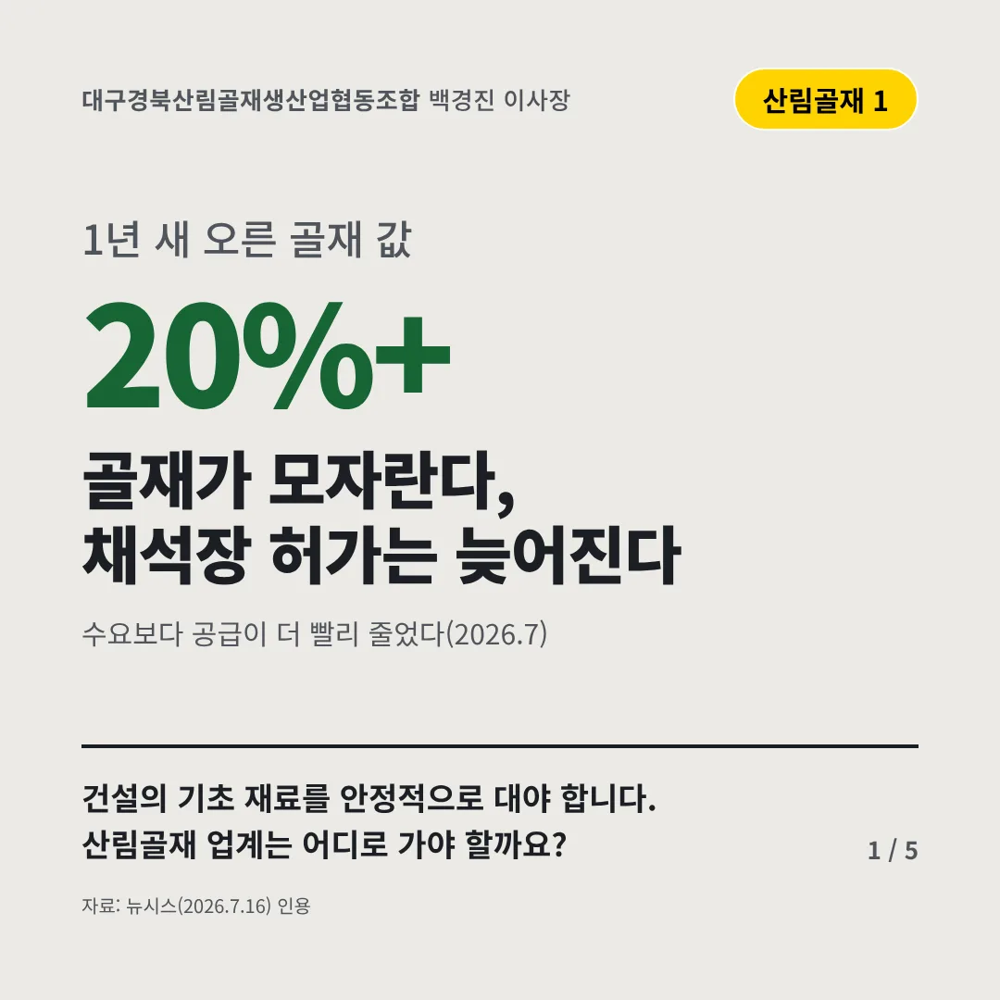
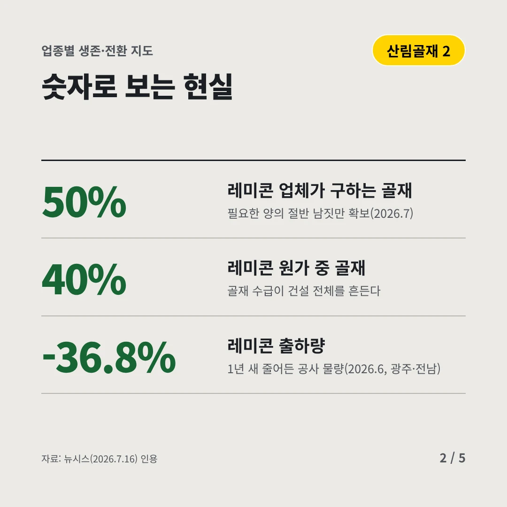
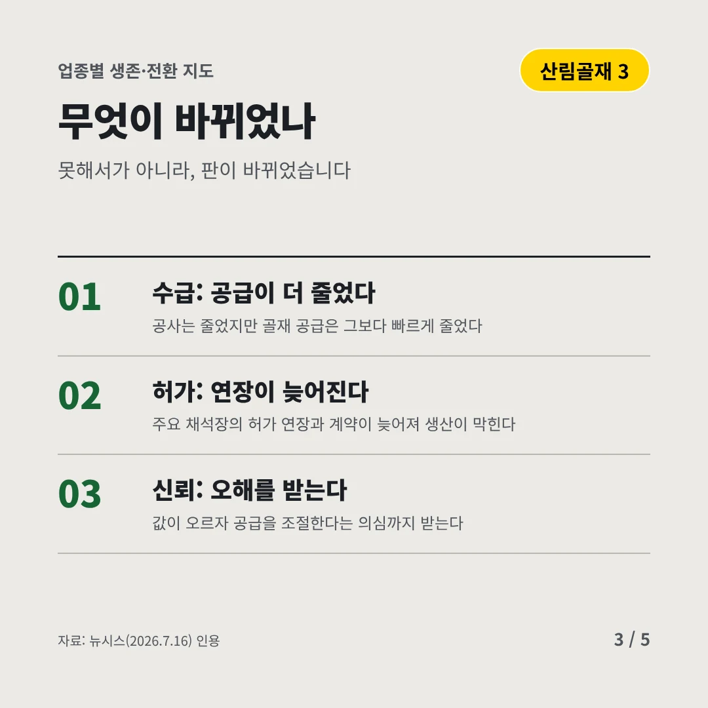
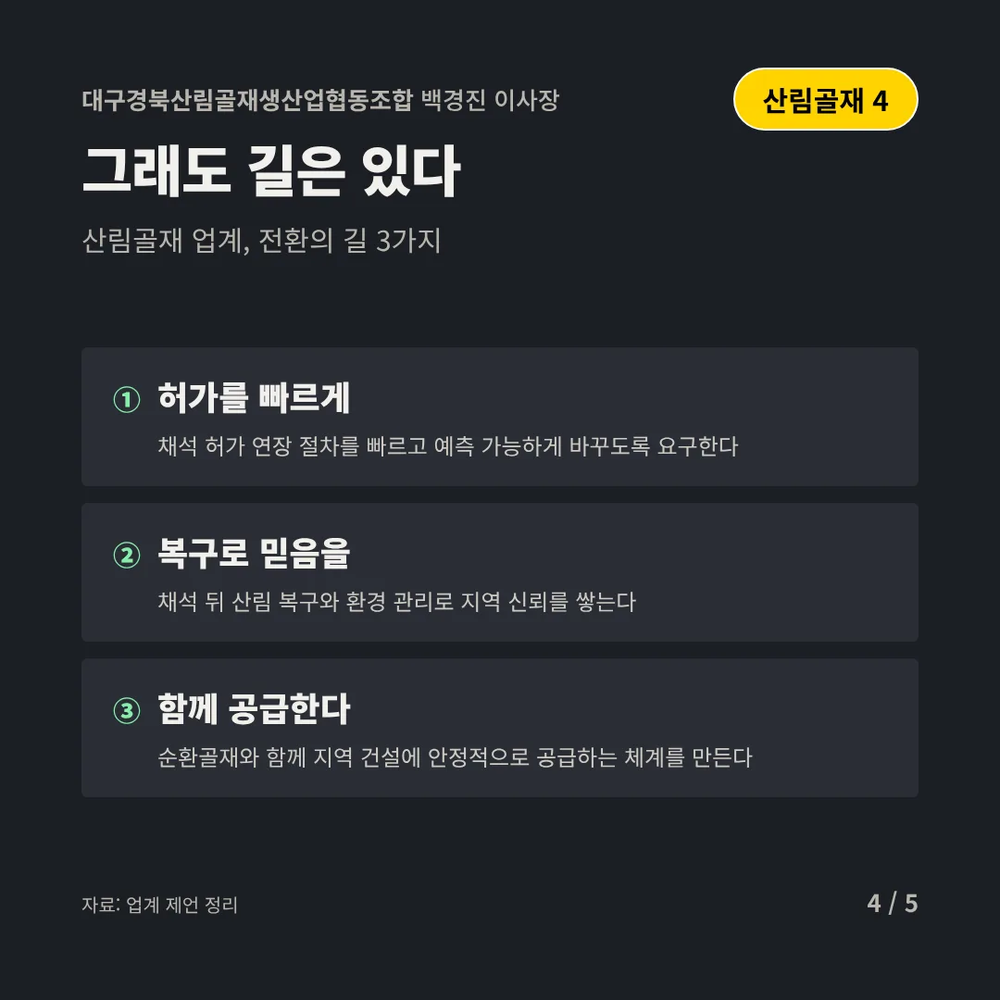
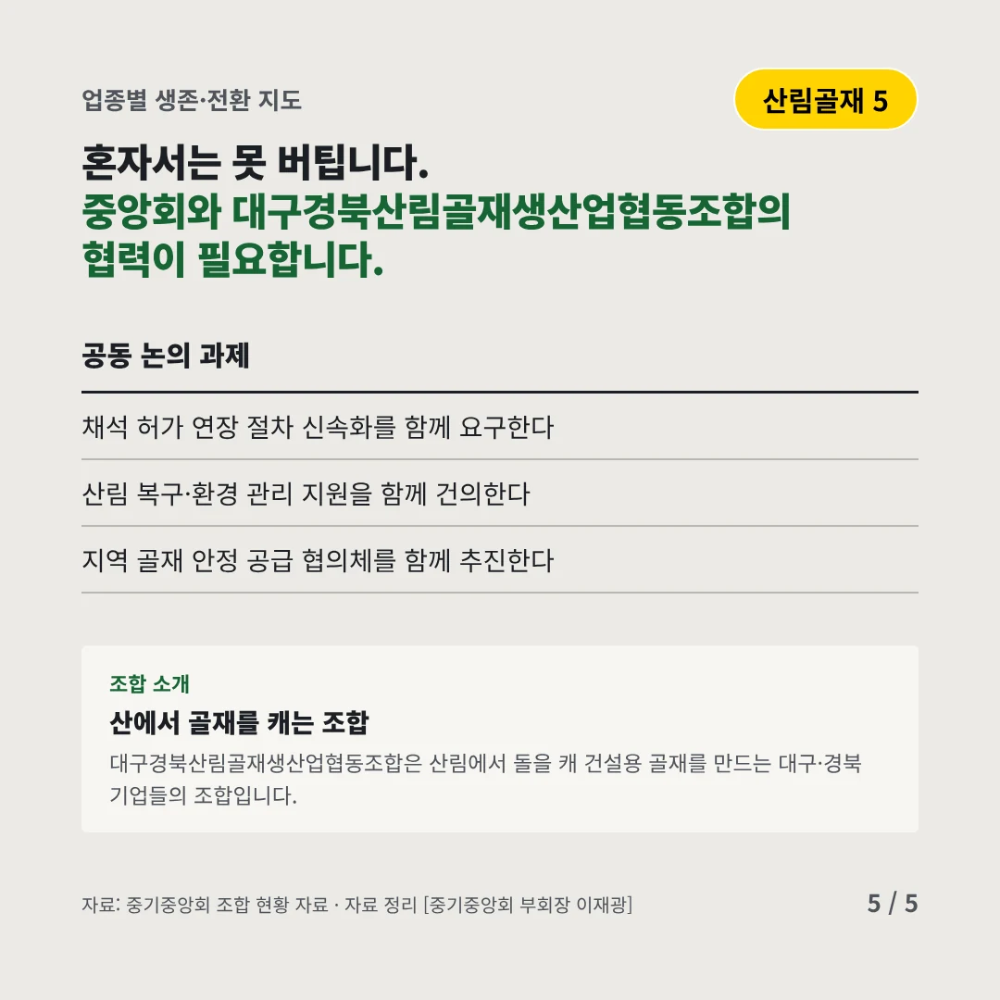
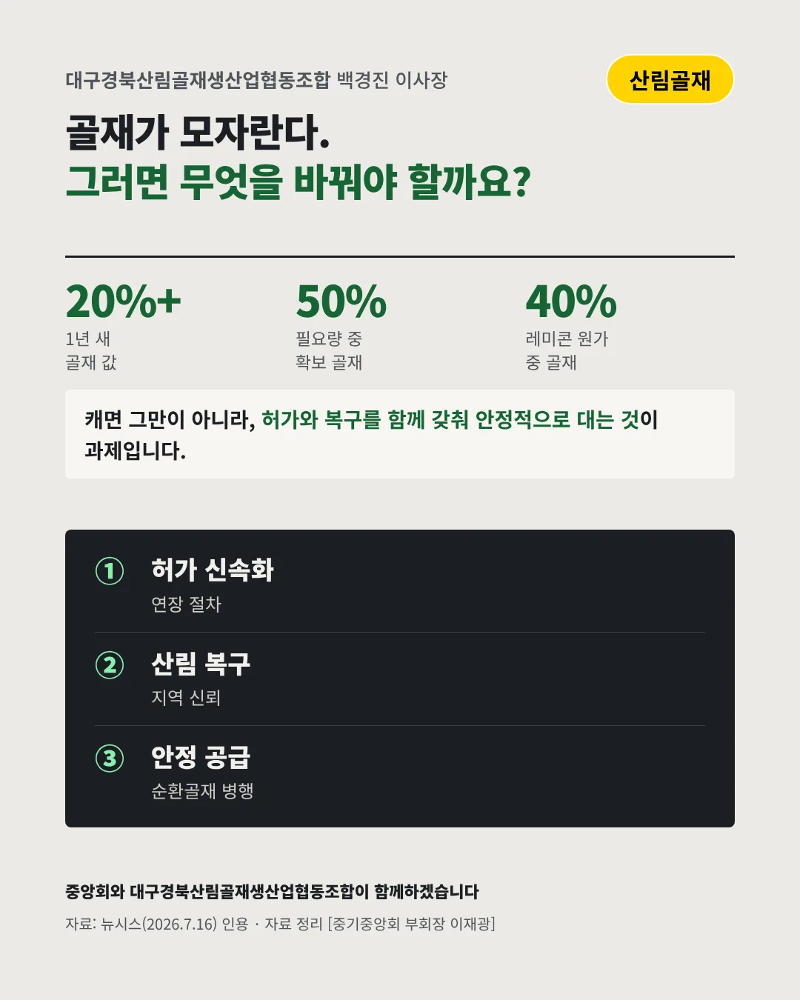

대구경북산림골재생산업협동조합
골재가 모자란다, 채석장 허가는 늦어진다
20%+ 1년 새 오른 골재 값






건설의 기초 재료를 안정적으로 대야 합니다. 산림골재 업계는 어디로 가야 할까요?
숫자로 보는 현실
- 50%레미콘 업체가 구하는 골재필요한 양의 절반 남짓만 확보(2026.7)
- 40%레미콘 원가 중 골재골재 수급이 건설 전체를 흔든다
- -36.8%레미콘 출하량1년 새 줄어든 공사 물량(2026.6, 광주·전남)
무엇이 바뀌었나
- 수급: 공급이 더 줄었다공사는 줄었지만 골재 공급은 그보다 빠르게 줄었다
- 허가: 연장이 늦어진다주요 채석장의 허가 연장과 계약이 늦어져 생산이 막힌다
- 신뢰: 오해를 받는다값이 오르자 공급을 조절한다는 의심까지 받는다
그래도 길은 있다
- 허가를 빠르게채석 허가 연장 절차를 빠르고 예측 가능하게 바꾸도록 요구한다
- 복구로 믿음을채석 뒤 산림 복구와 환경 관리로 지역 신뢰를 쌓는다
- 함께 공급한다순환골재와 함께 지역 건설에 안정적으로 공급하는 체계를 만든다
한 장 요약

조합 소개
대구경북산림골재생산업협동조합은 산림에서 돌을 캐 건설용 골재를 만드는 대구·경북 기업들의 조합입니다.
자료: 뉴시스(2026.7.16)